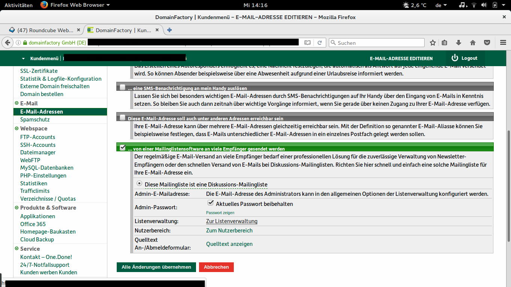
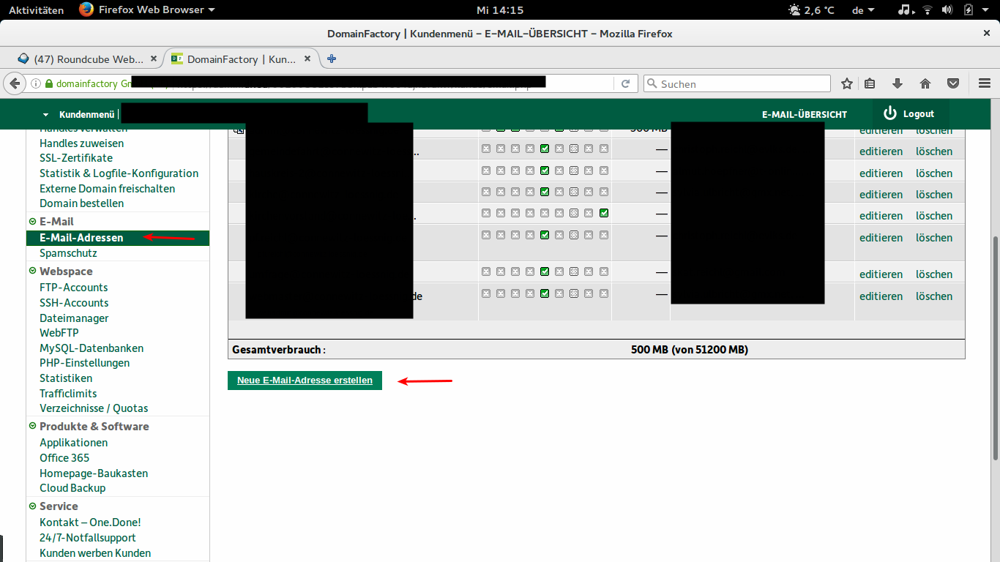
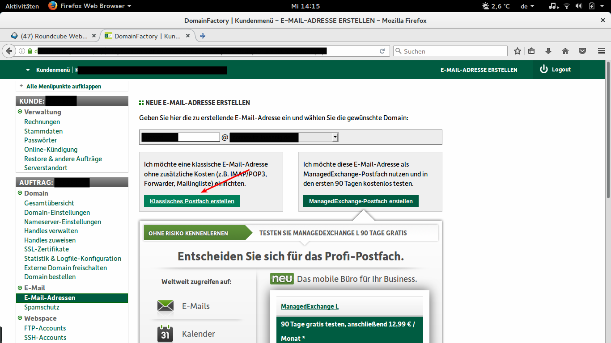
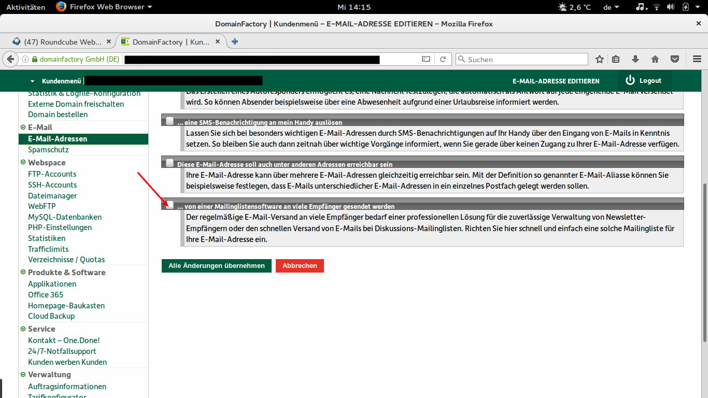
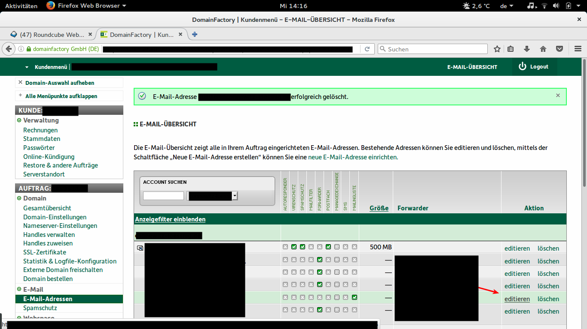

Einrichtung einer Mailingliste
Table of Contents
1 Hinzufügen der Mailadresse
Zunächst sollten Sie eine neue E-Mailadresse hinzufügen.
In den Einstellungen kann man dann einstellen, dass die Adresse zu einer Mailing-Liste gehört
Die Einrichtung erreicht man dann erstmal über die E-Maileinstellungen

1.1 Screenshots
Hier noch mal die Einrichtung einer neuen Adresse als Mailingliste




2 Basis-Einrichtung
2.1 Allgemeine Optionen
Unter "allgemeine Optionen" sind wichtige Einstellungen zu finden:
- Owner
- Mail-Adressen die hier eingetragen sind bekommen Fehlermeldungen und Moderationsanfragen dürfen die Liste per Mail administrieren
- subject_prefix
- Wird jedem Betreff vorangestellt
- reply-to Header
- Man kann in E-Mails einstellen, dass die Antwort nicht an den Absender geht. Es gibt viel Diskussion unter Nerds, ob Mails automatisch an Mailinglisten gehen sollten. Ich bevorzuge die Einstellung "Diese Liste" für "reply_goes_to_list". Das sorgt dafür dass die Antworten-Funktion in den meisten Mailprogrammen an die Liste antworten
Das sind die wichtigsten Einstellungen unter Allgemeine Optionen
2.2 Mitglieder-Verwaltung
Unter Mitglieder-Verwaltung können Mitglieder bearbeitet werden.
Es gibt unter Eintragen/Abonnieren, die Möglichkeit Mitglieder hinzuzufügen.
ACHTUNG: In Deutschland ist das direkte Hinzufügen offiziel nur mit expliziter Erlaubnis des Empfängers erlaubt.
2.3 Abo-Regeln und Adressfilter
Unter Absender-Filter lässt sich festlegen wer an die Liste schreiben darf: "generic_nonmember_action"
Auch spezielle Einstellungen für Nicht-Mitglieder sind dort vorzunehmen: [hold, accept, reject, discard]_these_nonmembers
3 Moderation
Moderation erlaubt es Mails an die Liste erst freigeben zu lassen. Dies müssen "moderatoren" oder "owner" vornehmen.
Es können auch nur einzelne Mitglieder, Nicht-Mitglieder moderiert werden. Siehe Filter.